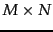

On page 6.3.1 we introduced the notion of a term-document matrix: an  matrix , each of whose rows represents a term and each of whose columns represents a document in the collection. Even for a collection of modest size, the term-document matrix is likely to have several tens of thousands of rows and columns. In Section 18.1.1 we first develop a class of operations from linear algebra, known as matrix decomposition. In Section 18.2 we use a special form of matrix decomposition to construct a low-rank approximation to the term-document matrix. In Section 18.3 we examine the application of such low-rank approximations to indexing and retrieving documents, a technique referred to as latent semantic indexing. While latent semantic indexing has not been established as a significant force in scoring and ranking for information retrieval, it remains an intriguing approach to clustering in a number of domains including for collections of text documents (Section 16.6 , page 16.6 ). Understanding its full potential remains an area of active research.
Readers who do not require a refresher on linear algebra may skip Section 18.1 , although Example 18.1 is especially recommended as it highlights a property of eigenvalues that we exploit later in the chapter.